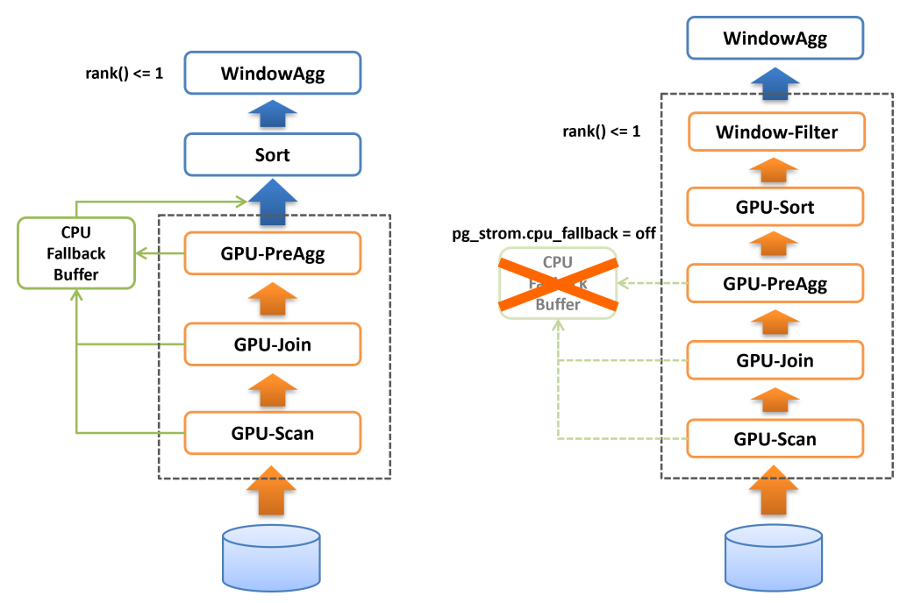
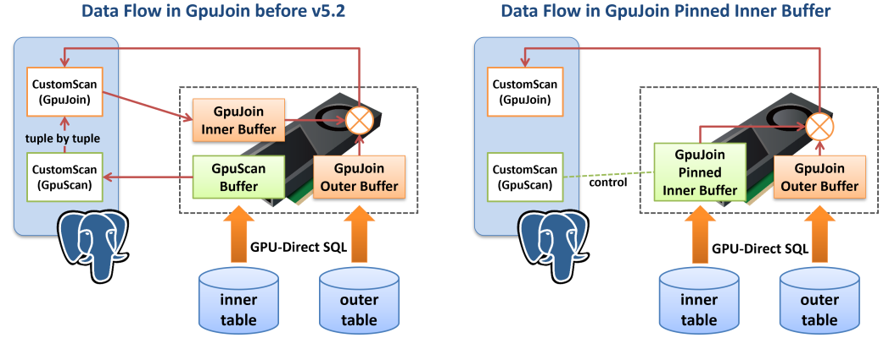
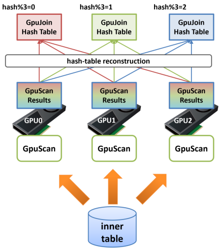

PG-Strom v6.0リリース
概要
PG-Strom v6.0における主要な変更は点は以下の通りです。
- GPU-Sortと一部のWindow関数対応
- マルチGPUのPinned Inner Buffer
- Arrow_Fdw 仮想列
- AVG(numeric)、SUM(numeric)の精度改善
- GpuPreAggの最終マージをGPU上で実行可能に
- GPUタスクのスケジューリング改善
- 累積的なバグの修正
動作環境
- PostgreSQL v15以降
- CUDA Toolkit 12.2 以降
- CUDA ToolkitのサポートするLinuxディストリビューション
- Intel x86 64bit アーキテクチャ(x86_64)
- NVIDIA GPU CC 6.0 以降 (Pascal以降; Turing以降を推奨)
GPU-Sortと一部のWindow関数対応
PG-Strom v6.0ではGPU-Sortに対応しました。
ソート処理は典型的なGPU向きのワークロードの一つで、初期のPG-Stromにおいても実装を試みたことがあります。 しかし、当時のGPUは搭載RAMが小さく、GPUのRAMに載る程度の行数のデータをGPUでソートしたところでそれほど大きな速度向上効果は得られなかったほか、基本的にはデータ量を小さくする処理ではなく、GPUからデータを受け取った後のCPU処理で詰まってしまう事から、当時は実装を見送ってきました。
しかし2025年現在、ハイエンドGPUの搭載メモリは数十GBに達し、またソート処理とLIMIT句やWindow関数を組み合わせるパターンが多くのワークロードにおいて有用である事も分かってきました。
ソート処理はその性質上、対象となるデータが全てGPUメモリに載っている必要があります。
一方、PG-Stromにおける各種GPU処理は、演算子やSQL関数の処理をGPU上で完遂できない場合に、CPUでこれを再実行するCPU-Fallbackという機構を持っています。典型的には、可変長データがPostgreSQLのブロックサイズ(8kB)に収まらず外部のTOASTテーブルに格納されている場合などです。 CPU-Fallbackは極めて例外的なデータに対しても処理の継続性を担保するための機能ですが、CPU-Fallbackの対象となった行はCPUで保持されるためGPUメモリ上には存在せず、よってソート処理を行う場合に障害となります。
そのため、GPU-Sort機能はCPU-Fallback機能が無効である時、つまりpg_strom.cpu_fallback=offである時にのみ作動します。

CPU-Fallbackが無効である時、GPU-Scan/Join/PreAggの完全な結果がGPUメモリ上に存在する事が保証されていますので、PG-StromはBitonic-Sortingアルゴリズムに基づく並列ソートを実行し、ソート済みの結果をCPUに返す事ができます。
また、LIMIT句やrank() < 4のように行数を制限するWindow関数と共に使用された場合、これらの最適化ヒントに基づいてCPUに返却するデータ件数を削減します。これはCPUの処理すべきデータ件数を削減するという形で高速化に寄与するはずです。
以下の実行計画をご覧ください。これはGPU-Sortを有効化しない状態でWindow関数（rank() < 4）による件数の絞り込みを行ったものです。
=# explain analyze
select * from (
select c_region, c_nation, c_city, lo_orderdate, sum(lo_revenue) lo_rev,
rank() over(partition by c_region, c_nation, c_city
order by sum(lo_revenue)) cnt
from lineorder, customer
where lo_custkey = c_custkey
and lo_shipmode in ('RAIL','SHIP')
group by c_region, c_nation, c_city, lo_orderdate
) subqry
where cnt < 4;
QUERY PLAN
--------------------------------------------------------------------------------------------------------------------------------------------------------------------
WindowAgg (cost=32013352.01..33893039.51 rows=75187500 width=84) (actual time=13158.987..13335.106 rows=750 loops=1)
Run Condition: (rank() OVER (?) < 4)
-> Sort (cost=32013352.01..32201320.76 rows=75187500 width=76) (actual time=13158.976..13238.136 rows=601500 loops=1)
Sort Key: customer.c_region, customer.c_nation, customer.c_city, (pgstrom.sum_numeric((pgstrom.psum(lineorder.lo_revenue))))
Sort Method: quicksort Memory: 76268kB
-> HashAggregate (cost=15987574.35..18836475.71 rows=75187500 width=76) (actual time=9990.801..10271.543 rows=601500 loops=1)
Group Key: customer.c_region, customer.c_nation, customer.c_city, lineorder.lo_orderdate
Planned Partitions: 8 Batches: 1 Memory Usage: 516113kB
-> Custom Scan (GpuPreAgg) on lineorder (cost=4967906.38..5907750.13 rows=75187500 width=76) (actual time=9175.476..9352.529 rows=1203000 loops=1)
GPU Projection: pgstrom.psum(lo_revenue), c_region, c_nation, c_city, lo_orderdate
GPU Scan Quals: (lo_shipmode = ANY ('{RAIL,SHIP}'::bpchar[])) [plan: 600046000 -> 171773200, exec: 1311339 -> 362780]
GPU Join Quals [1]: (lo_custkey = c_custkey) [plan: 171773200 -> 171773200, exec: 362780 -> 322560
GPU Outer Hash [1]: lo_custkey
GPU Inner Hash [1]: c_custkey
GPU Group Key: c_region, c_nation, c_city, lo_orderdate
Scan-Engine: GPU-Direct with 2 GPUs <0,1>; direct=11395910, ntuples=1311339
-> Seq Scan on customer (cost=0.00..81963.11 rows=3000011 width=46) (actual time=0.008..519.064 rows=3000000 loops=1)
Planning Time: 1.395 ms
Execution Time: 13494.808 ms
(19 rows)
GPU-PreAggの後、部分集計結果を集約するHashAggregate、そして集計値をソートするSortが実行され、最後に各c_region, c_nation, c_city毎にsum(lo_revenue)上位3件に絞り込むためのWindowAggが実行されています。
GPU-PreAggの処理時間は9.352秒ですので、概ね4秒ほどが後半のCPUで処理されていることが分かります。
一方、以下の実行計画はpg_strom.cpu_fallback=offを設定してCPU-Fallbackを無効化（つまりGPU-Sortを有効化）したものです。
=# set pg_strom.cpu_fallback = off;
SET
=# explain analyze
select * from (
select c_region, c_nation, c_city, lo_orderdate, sum(lo_revenue) lo_rev,
rank() over(partition by c_region, c_nation, c_city
order by sum(lo_revenue)) cnt
from lineorder, customer
where lo_custkey = c_custkey
and lo_shipmode in ('RAIL','SHIP')
group by c_region, c_nation, c_city, lo_orderdate
) subqry
where cnt < 4;
QUERY PLAN
--------------------------------------------------------------------------------------------------------------------------------------------------------
WindowAgg (cost=5595978.47..5602228.47 rows=125000 width=84) (actual time=9596.930..9598.194 rows=750 loops=1)
Run Condition: (rank() OVER (?) < 4)
-> Result (cost=5595978.47..5599415.97 rows=125000 width=76) (actual time=9596.918..9597.292 rows=750 loops=1)
-> Custom Scan (GpuPreAgg) on lineorder (cost=5595978.47..5597540.97 rows=125000 width=76) (actual time=9596.912..9597.061 rows=750 loops=1)
GPU Projection: pgstrom.psum(lo_revenue), c_region, c_nation, c_city, lo_orderdate
GPU Scan Quals: (lo_shipmode = ANY ('{RAIL,SHIP}'::bpchar[])) [plan: 600046000 -> 171773200, exec: 1311339 -> 362780]
GPU Join Quals [1]: (lo_custkey = c_custkey) [plan: 171773200 -> 171773200, exec: 362780 -> 322560
GPU Outer Hash [1]: lo_custkey
GPU Inner Hash [1]: c_custkey
GPU Group Key: c_region, c_nation, c_city, lo_orderdate
Scan-Engine: GPU-Direct with 2 GPUs <0,1>; direct=11395910, ntuples=1311339
GPU-Sort keys: c_region, c_nation, c_city, pgstrom.fsum_numeric((pgstrom.psum(lo_revenue)))
Window-Rank Filter: rank() over(PARTITION BY c_region, c_nation, c_city ORDER BY pgstrom.fsum_numeric((pgstrom.psum(lo_revenue)))) < 4
-> Seq Scan on customer (cost=0.00..81963.11 rows=3000011 width=46) (actual time=0.006..475.006 rows=3000000 loops=1)
Planning Time: 0.381 ms
Execution Time: 9710.616 ms
(16 rows)
元の実行計画に存在したHashAggregateおよびSortが無くなり、代わりにGpuPreAggのオプションとしてGPU-Sort keysやWindow-Rank Filterという行が出現しています。
これは、GpuPreAggが完全な集約をGPU上で作成し、更にそれをソートして出力する事を示しています。
さらにこのクエリの場合、Window関数であるrank()による絞り込みが行われています。この条件を下位ノードであるGpuPreAggにプッシュダウンする事で、予めフィルタされる事が分かっている行を結果セットから除去し、GPU->CPUへのデータ転送量と、CPUがコピーすべき行数を削減しています。これらの処理はGPUメモリ上で並列に処理されるため、一般的にはCPUが処理するより高速です。
マルチGPUのPinned Inner Buffer
PG-Strom v5.2でGPU-JoinのPinned Inner Bufferがサポートされました。 この機能は、GPU-JoinのINNER側下位プランとしてGPU-ScanやGPU-Joinが接続されており、その処理結果をそのまま並列化HashJoinの一つであるGPU-Joinのハッシュテーブルとして利用できる場合にハッシュ表の構築を高速化するものです。従来はGPU-ScanやGPU-Joinの処理結果を一度CPU側に戻してハッシュ表を構築していたところ、これをGPUメモリ上に留置しておき、後続のGPU-Joinで利用するというもので、GPU->CPU、再びCPU->GPUへとデータ移動する事を防げるため、とりわけINNER側のサイズが大きい場合に処理速度改善の恩恵が大きくなります。

しかし、多くのシステムではサーバ本体のRAMと比較してGPU搭載RAMの容量は限定的で、ハッシュ表のサイズにも制約があります。複数のGPUにハッシュ表を分割配置する事でこの制約を緩和する事ができますが、あるGPU上でHashJoinの実行中に別のGPU上に配置されているINNER行を参照してしまうと、GPUメモリのスラッシングと呼ばれる現象が発生し強烈な速度低下を招いてしまうため、HashJoinの実行中にはメモリアクセスの局所性を確保できる仕組みが必要でした。
PG-Strom v6.0ではGPU-JoinのPinned-Inner-BufferがマルチGPUに対応しています。
以下の図を見てください。GPU-JoinのINNER側テーブルのスキャン処理を複数のGPUで実行し、その処理結果をGPUメモリ上に留置してハッシュ表を構築した場合、それぞれのGPUにどのような行が載っているかは完全にランダムです。 次ステップのHash-Join処理でOUTER側から読み出した行が、最初にGPU1上のINNER行と結合し、次にGPU2上のINNER行と、最後にGPU0上のINNER行と結合するといった形になってしまうと、極端なスラッシングが発生し強烈な性能低下を引き起こします。
そのためPG-Strom v6.0のGPU-Joinでは、マルチGPUでのPinned-Inner-Buffer利用時に再構築（reconstruction）処理を挟み、ハッシュ表を適切なGPU上に再配置します。 例えば3台のGPUを搭載しているシステムで、ほぼハッシュ表の大きさが3台のGPU搭載RAMに収まる場合、INNER側テーブルのGPU-Scan終了後、次のGPU-Joinで利用する結合キーのハッシュ値を計算し、それを3で割った剰余が0の場合はGPU0に、1の場合はGPU1に、2の場合はGPU2にという再配置を行います。
この処理を挟む事で、GPU-JoinをGPU0上で実行した場合にハッシュ表にはハッシュ値を3で割った剰余が0であるINNER行しか存在せず、同様にGPU1にはハッシュ値を3で割った剰余が1であるINNER行しか存在しないという状態を作ることができます。

次にこの分割されたハッシュ表を用いてGPU-Joinを実行する場合、最初にOUTER側のテーブルからデータをロードしたGPU（ここではGPU2としましょう）がハッシュ表を参照する際、OUTER側の行から計算したハッシュ値を3で割った剰余が2以外であると、そのGPU上でマッチするINNER側の行は明らかに存在しません。 そのため、GPU2ではハッシュ値を3で割った剰余が2であるものだけから成る結合結果が生成されます。次に、このOUTER側のデータはGPU-to-GPU CopyによってGPU1へと転送され、そこではハッシュ値を3で割った剰余が1であるものだけから成る結合結果が生成されます。
これを繰り返すと、各GPU上で「部分的なHash-Joinの結果」が生成されますが、これらを統合したものは完全なHash-Joinの結果と等しくなり、結果としてGPU搭載RAMよりも大きなサイズのINNER側ハッシュ表であってもGPU-Joinを実行する事ができるようになりました。

本機能に関連して、pg_strom.pinned_inner_buffer_partition_sizeパラメータが追加されました。
これはPinned-Inner-Bufferを複数のGPUに分割する際の閾値となるサイズを指定するもので、初期値としてGPU搭載メモリの80～90%程度の値が設定されていますので、通常は管理者がこれを変更する必要はありません。
Arrow_Fdw 仮想列
データをバックアップする際に、そのファイル名の一部がデータの属性を示すように命名規則を設ける運用はしばしば見られます。
例えば、my_data_2018_tokyo.arrowというファイル名に、ここには2018年の東京エリアでのデータが格納されているといった意味合いを与える場合です。
Arrow_Fdw外部テーブルでは、dirオプションを用いて複数のApache ArrowファイルへのSQLアクセスが可能ですが、そのファイル名の一部になにがしかの意味を持たせている場合、それをヒントとしてArrow_Fdw外部テーブルへのアクセスを高速化する事ができます。
以下に例を示します。
$ ls /opt/arrow/mydata
f_lineorder_1993_AIR.arrow f_lineorder_1994_SHIP.arrow f_lineorder_1996_MAIL.arrow
f_lineorder_1993_FOB.arrow f_lineorder_1994_TRUCK.arrow f_lineorder_1996_RAIL.arrow
f_lineorder_1993_MAIL.arrow f_lineorder_1995_AIR.arrow f_lineorder_1996_SHIP.arrow
f_lineorder_1993_RAIL.arrow f_lineorder_1995_FOB.arrow f_lineorder_1996_TRUCK.arrow
f_lineorder_1993_SHIP.arrow f_lineorder_1995_MAIL.arrow f_lineorder_1997_AIR.arrow
f_lineorder_1993_TRUCK.arrow f_lineorder_1995_RAIL.arrow f_lineorder_1997_FOB.arrow
f_lineorder_1994_AIR.arrow f_lineorder_1995_SHIP.arrow f_lineorder_1997_MAIL.arrow
f_lineorder_1994_FOB.arrow f_lineorder_1995_TRUCK.arrow f_lineorder_1997_RAIL.arrow
f_lineorder_1994_MAIL.arrow f_lineorder_1996_AIR.arrow f_lineorder_1997_SHIP.arrow
f_lineorder_1994_RAIL.arrow f_lineorder_1996_FOB.arrow f_lineorder_1997_TRUCK.arrow
postgres=# IMPORT FOREIGN SCHEMA f_lineorder FROM SERVER arrow_fdw INTO public
OPTIONS (dir '/opt/arrow/mydata', pattern 'f_lineorder__${shipmode}.arrow');
IMPORT FOREIGN SCHEMA
postgres=# \d f_lineorder
Foreign table "public.f_lineorder"
Column | Type | Collation | Nullable | Default | FDW options
--------------------+---------------+-----------+----------+---------+----------------------
lo_orderkey | numeric | | | |
lo_linenumber | integer | | | |
lo_custkey | numeric | | | |
lo_partkey | integer | | | |
lo_suppkey | numeric | | | |
lo_orderdate | integer | | | |
lo_orderpriority | character(15) | | | |
lo_shippriority | character(1) | | | |
lo_quantity | numeric | | | |
lo_extendedprice | numeric | | | |
lo_ordertotalprice | numeric | | | |
lo_discount | numeric | | | |
lo_revenue | numeric | | | |
lo_supplycost | numeric | | | |
lo_tax | numeric | | | |
lo_commit_date | character(8) | | | |
lo_shipmode | character(10) | | | |
year | bigint | | | | (virtual 'year')
shipmode | text | | | | (virtual 'shipmode')
Server: arrow_fdw
FDW options: (dir '/opt/arrow/mydata', pattern 'f_lineorder__${shipmode}.arrow')
このシステムでは、/opt/arrow/mydataディレクトリに、SSBM(Star Schema Benchmark)のlineorderテーブルから出力したデータがlo_ordateの年次、およびlo_shipmodeの値ごとにまとめて保存されています。つまり、f_lineorder_1995_RAIL.arrowファイルから読み出した値は、必ずlo_orderdateの値が19950101～19951231の範囲内に収まっているという事です。
そうすると、このファイル名の一部に埋め込まれた"年次"の値を用いれば、明らかにマッチする行が存在しないApache Arrowファイルを読み飛ばし、クエリの応答速度を高速化できるのではないかというアイデアが生まれてきます。それがArrow_Fdwの仮想列機能で、この例では列オプションvirtualを持つyear列およびshipmode列が仮想列に相当します。
実際にはディレクトリ/opt/arrow/mydata配下のApache Arrowファイルにこれらの列は存在しませんが、外部表オプションpatternで指定された文字列の中で@{year}や$ {shipmode}はワイルドカードとして作用します。列オプションvirtualでyearやshipmodeという名前を指定すると、指定したワイルドカードにマッチするファイル名の一部分があたかもその仮想列の値であるかのように振舞います。
例えば、f_lineorder_1995_RAIL.arrowに由来する行の仮想列yearの値は1995となりますし、仮想列shipmodeの値は'RAIL'となります。
この性質を利用してクエリを最適化する事ができます。
以下の例は、この外部テーブルに対して、1993年のデータおよびいくつかの条件を付加して集計値を検索するものです。
物理的にApache Arrowファイルに存在する列lo_orderdateの値に範囲条件between 19930101 and 19931231を付加したものと比べ、仮想列yearと1993を比較するよう検索条件を調整したものは、EXPLAIN ANALYZEの出力のうちStats-Hint:によれば全60個のRecord-Batchのうち48個を読み飛ばし、実際には1/5の12個しか処理していない（しかし結果は同じである）事がわかります。
全てのケースにおいて利用できる最適化ではありませんが、データ配置や命名規則、ワークロードによっては利用する事のできる手軽な最適化と言えるでしょう。
仮想列による最適化なし
=# explain analyze
select sum(lo_extendedprice*lo_discount) as revenue
from f_lineorder
where lo_orderdate between 19930101 and 19931231
and lo_discount between 1 and 3
and lo_quantity < 25;
QUERY PLAN
------------------------------------------------------------------------------------------
Aggregate (cost=463921.94..463921.95 rows=1 width=32) (actual time=175.826..175.828 rows=1 loops=1)
-> Custom Scan (GpuPreAgg) on f_lineorder (cost=463921.92..463921.93 rows=1 width=32) \
(actual time=175.808..175.811 rows=2 loops=1)
GPU Projection: pgstrom.psum((lo_extendedprice * lo_discount))
GPU Scan Quals: ((lo_orderdate >= 19930101) AND (lo_orderdate <= 19931231) AND \
(lo_discount >= '1'::numeric) AND (lo_discount <= '3'::numeric) AND \
(lo_quantity < '25'::numeric)) [plan: 65062080 -> 542, exec: 65062081 -> 1703647]
GPU Group Key:
referenced: lo_orderdate, lo_quantity, lo_extendedprice, lo_discount
file0: /opt/arrow/mydata/f_lineorder_1996_MAIL.arrow (read: 107.83MB, size: 427.16MB)
file1: /opt/arrow/mydata/f_lineorder_1996_SHIP.arrow (read: 107.82MB, size: 427.13MB)
:
file29: /opt/arrow/mydata/f_lineorder_1993_TRUCK.arrow (read: 107.51MB, size: 425.91MB)
GPU-Direct SQL: enabled (N=2,GPU0,1; direct=413081, ntuples=65062081)
Planning Time: 0.769 ms
Execution Time: 176.390 ms
(39 rows)
=# select sum(lo_extendedprice*lo_discount) as revenue
from f_lineorder
where lo_orderdate between 19930101 and 19931231
and lo_discount between 1 and 3
and lo_quantity < 25;
revenue
---------------
6385711057885
(1 row)
仮想列による最適化あり
=# explain analyze
select sum(lo_extendedprice*lo_discount) as revenue
from f_lineorder
where year = 1993
and lo_discount between 1 and 3
and lo_quantity < 25;
QUERY PLAN
------------------------------------------------------------------------------------------
Aggregate (cost=421986.99..421987.00 rows=1 width=32) (actual time=54.624..54.625 rows=1 loops=1)
-> Custom Scan (GpuPreAgg) on f_lineorder (cost=421986.97..421986.98 rows=1 width=32) \
(actual time=54.616..54.618 rows=2 loops=1)
GPU Projection: pgstrom.psum((lo_extendedprice * lo_discount))
GPU Scan Quals: ((year = 1993) AND (lo_discount <= '3'::numeric) AND (lo_quantity < '25'::numeric) \
AND (lo_discount >= '1'::numeric)) [plan: 65062080 -> 542, exec:13010375 -> 1703647]
GPU Group Key:
referenced: lo_quantity, lo_extendedprice, lo_discount, year
Stats-Hint: (year = 1993) [loaded: 12, skipped: 48]
file0: /opt/arrow/mydata/f_lineorder_1996_MAIL.arrow (read: 99.53MB, size: 427.16MB)
file1: /opt/arrow/mydata/f_lineorder_1996_SHIP.arrow (read: 99.52MB, size: 427.13MB)
file29: /opt/arrow/mydata/f_lineorder_1993_TRUCK.arrow (read: 99.24MB, size: 425.91MB)
GPU-Direct SQL: enabled (N=2,GPU0,1; direct=76245, ntuples=13010375)
Planning Time: 0.640 ms
Execution Time: 55.078 ms
(40 rows)
=# select sum(lo_extendedprice*lo_discount) as revenue
from f_lineorder
where year = 1993
and lo_discount between 1 and 3
and lo_quantity < 25;
revenue
---------------
6385711057885
(1 row)
AVG(numeric)、SUM(numeric)の精度改善
GPUのAtomic演算に関する制限（浮動小数点型のatomicAdd()は64bitまで対応）から、これまでnumeric型の集計処理は浮動小数点型（float8）へのキャストを行って実装されてきました。
しかしこの場合、わずか53bitしか仮数部を持たない倍精度型浮動小数点データを数百万回も加算するという事になり、計算誤差の蓄積がかなり酷いものになるという課題がありました。そのため、numeric型集計関数のGPUでの実行を抑止するというオプションをわざわざ用意したほどです。（pg_strom.enable_numeric_aggfuncsオプション）
v6.6では、numericデータ型のGPU内部実装である128bit固定小数点表現を利用して集計処理を行うよう改良されました。計算誤差が全く発生しなくなったわけではありませんが、実数を表現する桁数が増えた分、計算誤差はかなりマイルドになっています。
### by CPU(PostgreSQL)
postgres=# select count(*), sum(x) from t;
count | sum
----------+-------------------------------
10000000 | 5000502773.174181378779819237
(1 row)
### by GPU(PG-Strom v5.2)
postgres=# select count(*), sum(x) from t;
count | sum
----------+------------------
10000000 | 5022247013.24539
(1 row)
postgres=# select count(*), sum(x) from t;
count | sum
----------+------------------
10000000 | 5011118562.96062
(1 row)
### by GPU(PG-Strom v6.0)
postgres=# select count(*), sum(x) from t;
count | sum
----------+-----------------------------
10000000 | 5000502773.1741813787793780
(1 row)
postgres=# select count(*), sum(x) from t;
count | sum
----------+-----------------------------
10000000 | 5000502773.1741813787793780
(1 row)
GpuPreAggの最終マージをGPU上で実行可能に
集約演算を並列に処理する場合、これはPostgreSQLにおけるCPU並列処理でも同様ですが、部分的な集約処理を先に行い、その中間結果を最後にマージするという方法を取ります。例えばXの平均値AVG(X)を計算する場合、Xの出現回数とXの総和があれば平均値を計算できるわけですので、ワーカープロセス毎に"部分的な"Xの出現回数とXの総和を計算し、それを最後にシングルプロセスで集計します。
この方式は、巨大なテーブルからごく少数のカテゴリ毎の集計値を計算する、つまりカーディナリティの低い処理であれば非常に効果的に働きます。一方で、カーディナリティの低い、例えば単純な重複排除クエリのようにグループ数の多いタイプのワークロードであれば、部分的な集計処理のほかに、シングルCPUスレッドでの最終マージ処理を行うため、並列処理の効果は限定的になりがちです。
### by CPU (PostgreSQL)
=# EXPLAIN SELECT t1.cat, count(*) cnt, sum(a)
FROM t0 JOIN t1 ON t0.cat = t1.cat
GROUP BY t1.cat;
QUERY PLAN
----------------------------------------------------------------------------------------------
Finalize HashAggregate (cost=193413.59..193413.89 rows=30 width=20)
Group Key: t1.cat
-> Gather (cost=193406.84..193413.14 rows=60 width=20)
Workers Planned: 2
-> Partial HashAggregate (cost=192406.84..192407.14 rows=30 width=20)
Group Key: t1.cat
-> Hash Join (cost=1.68..161799.20 rows=4081019 width=12)
Hash Cond: (t0.cat = t1.cat)
-> Parallel Seq Scan on t0 (cost=0.00..105362.15 rows=4166715 width=4)
-> Hash (cost=1.30..1.30 rows=30 width=12)
-> Seq Scan on t1 (cost=0.00..1.30 rows=30 width=12)
(11 rows)
これまでのPG-Stromでも同じ問題を抱えていました。 つまり、並列ワーカープロセスの制御下で動作するGpuPreAggは"部分的な"集計処理は行うものの、これらのCPU並列プロセスで処理された"部分的な"集計結果は、最終的にシングルスレッドのCPUで動作する最終マージ処理を挟まねばならないというものです。
以下の例では、GpuPreAggの結果を（並列ワーカープロセスを制御する）Gatherノードが受け取り、それを（シングルスレッドのCPUで動作する）HashAggregateが受け取る実行計画になっており、グループ数が多くなるとワークロードに占めるシングルCPUスレッドで処理する部分の割合が無視できないものになってきます。
### by GPU (PG-Strom v5.2)
=# EXPLAIN SELECT t1.cat, count(*) cnt, sum(a)
FROM t0 JOIN t1 ON t0.cat = t1.cat
GROUP BY t1.cat;
QUERY PLAN
------------------------------------------------------------------------------------------------
HashAggregate (cost=30100.15..30100.53 rows=30 width=20)
Group Key: t1.cat
-> Gather (cost=30096.63..30099.93 rows=30 width=44)
Workers Planned: 2
-> Parallel Custom Scan (GpuPreAgg) on t0 (cost=29096.63..29096.93 rows=30 width=44)
GPU Projection: pgstrom.nrows(), pgstrom.psum(t1.a), t1.cat
GPU Join Quals [1]: (t0.cat = t1.cat) ... [nrows: 4166715 -> 4081019]
GPU Outer Hash [1]: t0.cat
GPU Inner Hash [1]: t1.cat
GPU Group Key: t1.cat
GPU-Direct SQL: enabled (N=2,GPU0,1)
-> Parallel Seq Scan on t1 (cost=0.00..1.18 rows=18 width=12)
(12 rows)
GpuPreAggがGPU上で構築する集計結果が"部分的な"ものでなければ、CPU側で再度の集計処理を行う必要はありません。 その際に一つだけ問題になるのが、CPU-Fallback処理です。可変長データが外部テーブルに格納されている（TOAST可）などが原因で、一部の行をCPUで処理した場合、GPUメモリ上の結果だけでは整合性のある集計結果を出力する事ができません。
しかし、現実の集計処理においてCPU-Fallbackが発生するパターンはそれほど多くはありません。そのため、PG-Strom v6.0では、CPU-Fallback処理が無効化されている場合にはGPUデバイスメモリ上で最終マージ処理まで実行し、CPU側での集計処理を省略するモードを搭載しました。
以下の実行計画の例では、Gatherノードの配下にGpuPreAggが配置されていますが、これまでのようにそれを最終的にマージするHashAggregateは組み込まれていません。GpuPreAggが整合性のある結果を返すため、CPU側で追加の集計処理は必要ないのです。
### by GPU (PG-Strom v6.0)
=# set pg_strom.cpu_fallback = off;
SET
=# EXPLAIN SELECT t1.cat, count(*) cnt, sum(a)
FROM t0 JOIN t1 ON t0.cat = t1.cat
GROUP BY t1.cat;
QUERY PLAN
------------------------------------------------------------------------------------------------
Gather (cost=30096.63..30100.45 rows=30 width=20)
Workers Planned: 2
-> Result (cost=29096.63..29097.45 rows=30 width=20)
-> Parallel Custom Scan (GpuPreAgg) on t0 (cost=29096.63..29096.93 rows=30 width=44)
GPU Projection: pgstrom.nrows(), pgstrom.psum(t1.a), t1.cat
GPU Join Quals [1]: (t0.cat = t1.cat) ... [nrows: 4166715 -> 4081019]
GPU Outer Hash [1]: t0.cat
GPU Inner Hash [1]: t1.cat
GPU Group Key: t1.cat
GPU-Direct SQL: enabled (N=2,GPU0,1)
-> Parallel Seq Scan on t1 (cost=0.00..1.18 rows=18 width=12)
(11 rows)
その他の新機能
- GPUスケジュールの改善
- 従来はPostgreSQLバックエンドプロセスに対して1個のGPUを固定で割当て、マルチGPUを利用にはPostgreSQLのパラレルクエリが前提となっていました。この設計はv3.x以前のアーキテクチャに由来するもので、実装をシンプルにするメリットの一方、マルチGPUのスケジューリングが難しいという課題がありました。
- v6.0ではGPU-Serviceが全てのGPUタスクのスケジューリングを担います。マルチGPUの環境においては、PostgreSQLバックエンドから受け取ったGPUタスクの要求は、スケジュール可能なGPUのうち、その時点でキューイングされているタスク数が最も小さなGPUに割り当てられるようになりました。
- これにより、より自然な形でマルチGPUの処理能力を利用できるようになりました。
- CUDA Stack Limit Checker
- 再帰処理を含むGPUコードにおいて、スタック領域の使い過ぎをチェックするロジックが入りました。
- これにより、複雑なパターンを含むLIKE句などで、予期せぬスタックの使い過ぎによるGPUカーネルのクラッシュを抑止する事が期待されます。
- GPUでのRIGHT OUTER JOIN処理
- これまではCPU-Fallbackの機構を使用して実装されていたRIGHT OUTER JOINが、GPU上で実行されるようになりました。
- GPU-Direct SQL Decision Making Logs
- いくつかの環境でGPU-Direct SQLが発動しない理由を探るためのヒントを得られるようになりました。
- 環境変数
HETERODB_EXTRA_EREPORT_LEVEL=1をセットしてPostgreSQLを起動する事で有効化されます。
pgstrom.arrow_fdw_metadata_info()でApache Arrowファイルのメタデータを参照できるようになりました。column IN (X,Y,Z,...)の演算子でArrow_FdwのMIN/MAX統計情報を参照するようになりました。- ワークロードに対するGPU割り当てポリシーを
optimal、numa、systemの3通りから選べるようになりました。optimalは従来通り、PCI-Eバス上でストレージとGPUの距離が最も近いもの。numaは同一CPUの配下に接続されているストレージとGPUをペアにする事で、QPI跨ぎのデータ転送を抑止します。systemはシステムで有効なGPUを全てスケジュール可能とします。
heterodb-extraモジュールのエラーメッセージをPostgreSQLのログに出力できるようになりました。pg_strom.extra_ereport_levelパラメータでログ出力レベルを制御できます。
- ゲノムデータの保管、交換といった用途で標準的に使用されているVCF形式を、Apache Arrowに変換するためのコンバータ
vcf2arrowが同梱されるようになりました。
累積的なバグの修正
- [#900] bugfix: groupby_prepfn_bufsz may be initialized to 0, if num_groups is extremely large.
- [#890] allows wide VFS read without heterodb-extra
- [#886] bugfix: catalog corruption of gpupreagg
- [#885] pg2arrow --append overwrites the field name of the original file
- [#884] bugfix: arrow2csv checks 'pg_type' metadata too strictly
- [#879] gpupreagg: add support of FILTER-clause for aggregate functions
- [#871] bugfix: non-key distinct clause must be a simple Var or device executable
- [#865] add logs to report decision making of GPU-Direct SQL.
- [#864] arrow_fdw: metadata cache refactoring for custom key-value displaying
- [#860] bugfix: MIN() MAX() returned empty result if nitems is multiple of 2^32
- [#856] add fallback by managed-memory if raw-gpu-memory exceeds the hard limit
- [#852] wrong template deployment of move_XXXX_value() callback
- [#851] bugfix: pgstromExecResetTaskState didn't work correctly
- [#847] bugfix: max(float) used wrong operator
- [#844] postgis: st_crosses() should return false for identical linestring geometry
- [#831] arrow-fdw: incorrect record-batch index calculation
- [#829] bugfix: GpuScan considered inheritance-table as if it is normal table
- [#829] bugfix: pgstrom_partial_nrows() didn't return correct value if '0' is given
- [#827] bugfix: RIGHT OUTER tuple didn't check 'other_quals' in 'join_quals'
- [#825] arrowFieldTypeIsEqual didn't work for FixedSizeBinary
- [#824] pg2arrow: moved empty results check to the end of file creation.
- [#820] bugfix: CPU-fallback ExprState was not initialized correctly
- [#820] additional fix on CPU-fallback expression references
- [#819] bugfix: a bunch of rows were skipped after GPU kernel suspend/resume
- [#817] GPU-Service didn't detach worker thread's exit status.
- [#815] fluentd: arrow_file_write module was updated to sync fluentd4
- [#812] CPU-fallback at depth>0 didn't set ecxt_scanslot correctly.
- [#812] bugfix: pgfn_st_crosses() returned uninitialized results
- [#812] fix wrong CPU fallback at GiST-Join
- [#811] add delay to apply pg_strom.max_async_tasks
- [#809][#810] Documentation fix
- [#808] pg2arrow: put_decimal_value() handles numeric with negative weight incorrectly.
- [#805] CREATE OPERATOR makes a pseudo commutor/negator operators in the default namespace
- [#743][#838] nvcc working directory is moved to $PGDATA/.pgstrom_fatbin_build_XXXXXX
- [#xxx] pg2arrow: raise an error if numeric value is Nan, +Inf or -Inf
- [#xxx] bugfix: CPU-fallback handling of system columns
- [#xxx] bugfix: cuMemcpyPeer() caused SEGV when # of threads > 20
- [#xxx] bugfix: scan_block_count was not initialized on the DSM
- [#xxx] bugfix: some GpuPreAgg final functions didn't care NULL input
- [#xxx] bugfix: aggregate function (co-variation) wrong definition
- [#xxx] bugfix: __releaseMetadataCacheBlock referenced NULL when multiple cache blocks released.
- [#xxx] bugfix: PROCOID cache entry was not released
- [#xxx] bugfix: kern_global_stair_sum_u32() didn't return right value